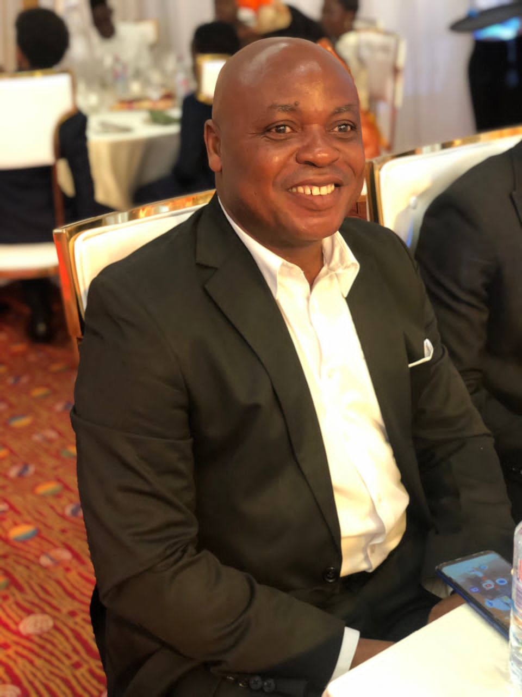
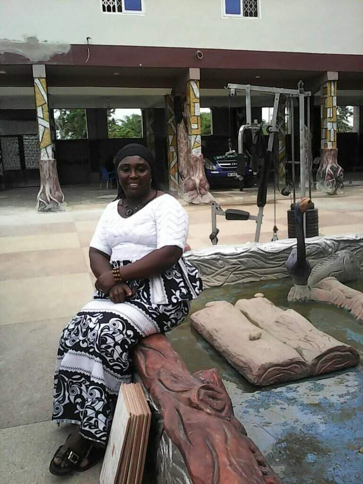
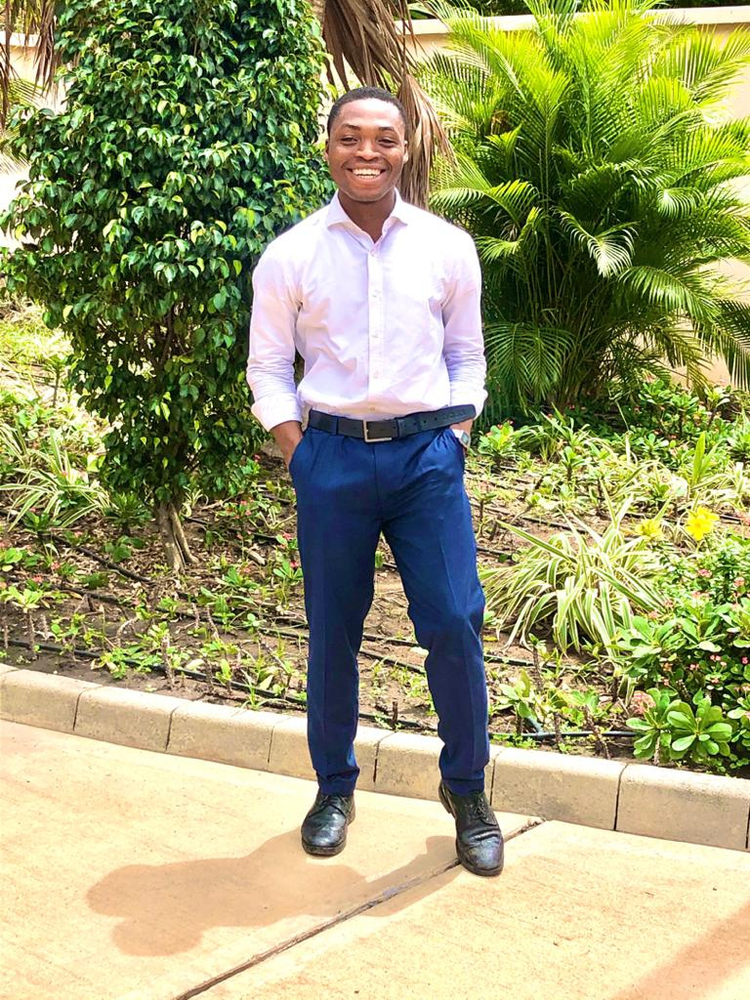
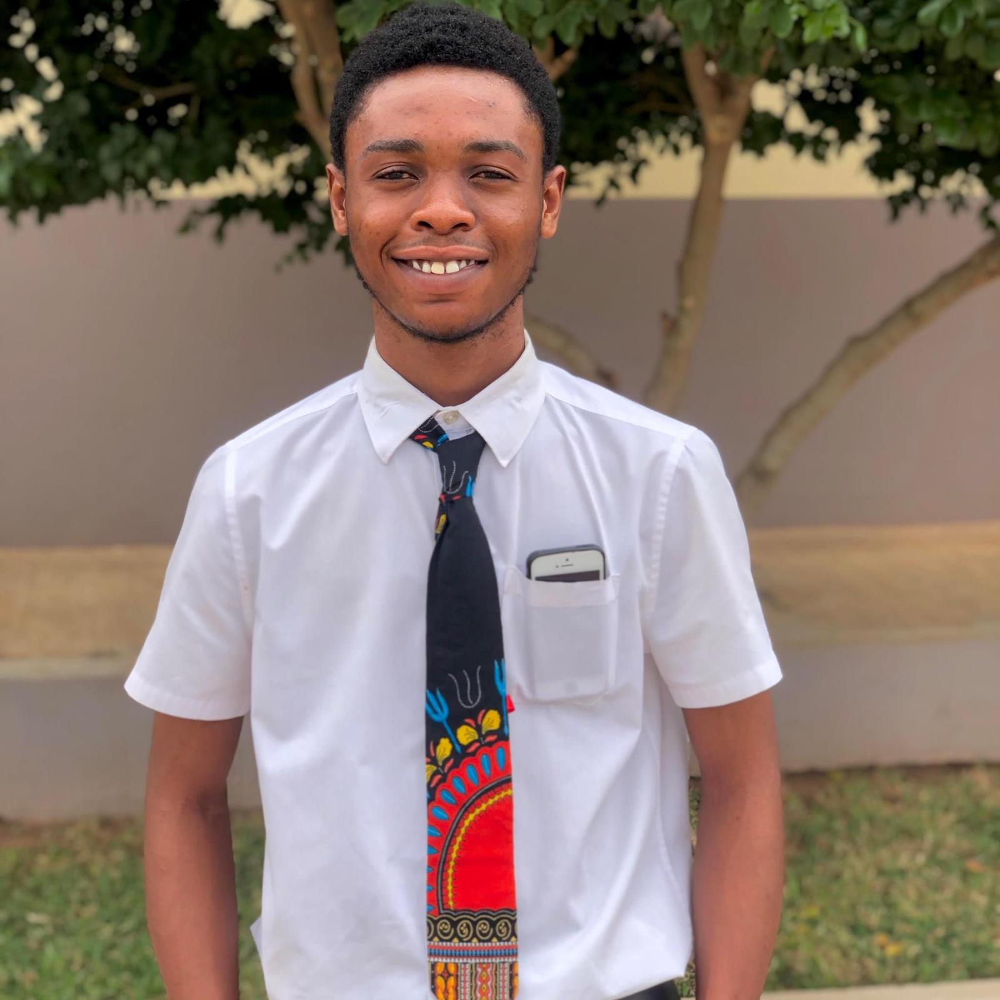
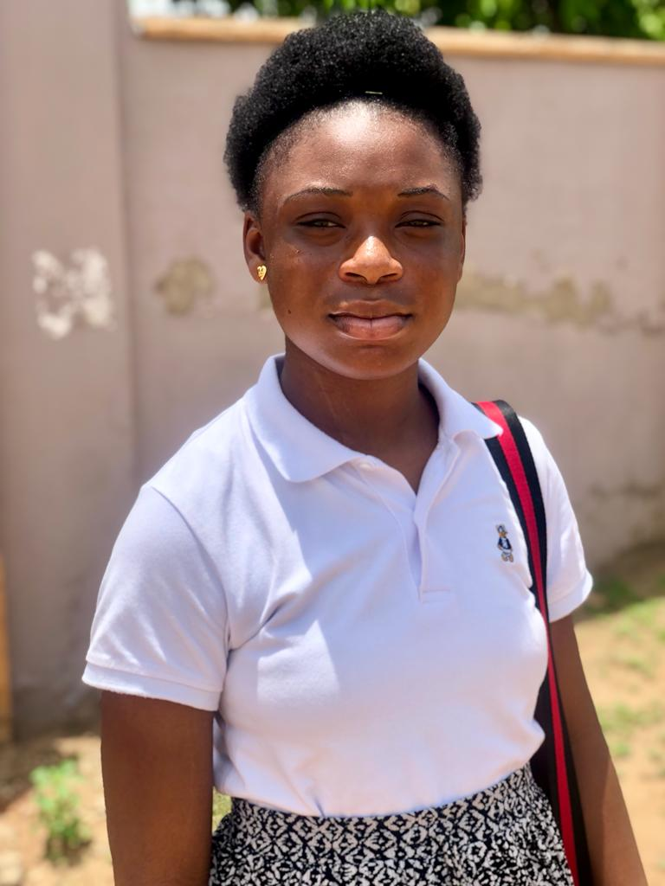

Mark Kwaku Agyei
Mark is the 5th of 8 children in his family. His dad and his mom divorced when he was 15. He found his wife during his 20s, and they both got married. They raised a decent family and built a home. He worked for the government and later started his own business. Mark now works with FamilySearch and serves as the first counselor in the Bishopric.

Elizabeth Agyei
Elizabeth is the last child from a family of seven boys and one two girls. She grew up in an small
town in the Eastern Region of Ghana. She was able to finish high school and decided to start a family.
She met her husband and started dating each other at the age of 16. She got married to him years later and
started a family. She learned hair-dressing skills and got a job from that to support the family. She is currently a primary school
teacher and loves the Gospel.
Richard Sarfo Agyei
Richard is the first born of the family. He leads the family in absence of Dad. He has always been a
of great support to his siblings and inspired them in a lot of ways. He is almost done with his chartered accountancy course
and will be a professional accountant very soon. Kwame served in Nigeria Port-Harcourt Mission.

Enoch Ameyaw Agyei
Enoch is a supportive twin and a pillar of the family. He loves the Gospel very much.
He has made a lot of sacrifices to the family and the lord has blessed him a lot.
He is currently working on his degree and he is planning on getting married next year
Enoch served in Congo Brazzaville mission.

Isaac Okyere Agyei
Isaac is a very special kid. He is different and has special talents as well.
He carves his own path and wants to achieve great things in life. He finished his high school last year
and he is currently at the MTC going to serve his mission in Congo Brazzaville.
Bismark Darfour Agyei
Bismark is the last male child of the family. He is born on a rainy Easter Sunday. My Mom
always said that he is the only child whom she did not suffer enough child labor pains. He came through smoothly and quickly.
He has almost the same talents as my dad and a Gel in the family. He is currently in High School and earns to sertve a mission
as soon as he is done.

Sabina Agyei
Sabina is the hope of the family. She almost did not make it at child birth and my mom also. She was in my Mom's placenta for more
than 11 months. She is the only girl in a family of five boys. She inherits all the talents from each member of the family. She is
currently in Junior High School and also planning to serve a mission after she is done with Senior High School